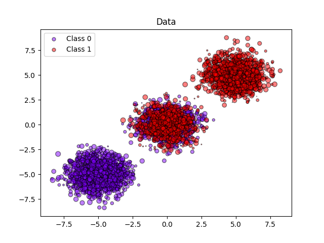
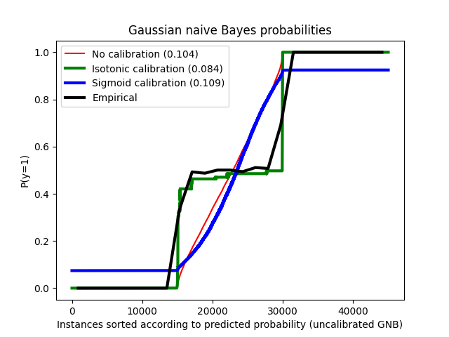

Note
Go to the end to download the full example code or to run this example in your browser via Binder
Probability calibration of classifiers¶
When performing classification you often want to predict not only the class label, but also the associated probability. This probability gives you some kind of confidence on the prediction. However, not all classifiers provide well-calibrated probabilities, some being over-confident while others being under-confident. Thus, a separate calibration of predicted probabilities is often desirable as a postprocessing. This example illustrates two different methods for this calibration and evaluates the quality of the returned probabilities using Brier’s score (see https://en.wikipedia.org/wiki/Brier_score).
Compared are the estimated probability using a Gaussian naive Bayes classifier without calibration, with a sigmoid calibration, and with a non-parametric isotonic calibration. One can observe that only the non-parametric model is able to provide a probability calibration that returns probabilities close to the expected 0.5 for most of the samples belonging to the middle cluster with heterogeneous labels. This results in a significantly improved Brier score.
# Authors:
# Mathieu Blondel <mathieu@mblondel.org>
# Alexandre Gramfort <alexandre.gramfort@telecom-paristech.fr>
# Balazs Kegl <balazs.kegl@gmail.com>
# Jan Hendrik Metzen <jhm@informatik.uni-bremen.de>
# License: BSD Style.
Generate synthetic dataset¶
import numpy as np
from sklearn.datasets import make_blobs
from sklearn.model_selection import train_test_split
n_samples = 50000
n_bins = 3 # use 3 bins for calibration_curve as we have 3 clusters here
# Generate 3 blobs with 2 classes where the second blob contains
# half positive samples and half negative samples. Probability in this
# blob is therefore 0.5.
centers = [(-5, -5), (0, 0), (5, 5)]
X, y = make_blobs(n_samples=n_samples, centers=centers, shuffle=False, random_state=42)
y[: n_samples // 2] = 0
y[n_samples // 2 :] = 1
sample_weight = np.random.RandomState(42).rand(y.shape[0])
# split train, test for calibration
X_train, X_test, y_train, y_test, sw_train, sw_test = train_test_split(
X, y, sample_weight, test_size=0.9, random_state=42
)
Gaussian Naive-Bayes¶
from sklearn.calibration import CalibratedClassifierCV
from sklearn.metrics import brier_score_loss
from sklearn.naive_bayes import GaussianNB
# With no calibration
clf = GaussianNB()
clf.fit(X_train, y_train) # GaussianNB itself does not support sample-weights
prob_pos_clf = clf.predict_proba(X_test)[:, 1]
# With isotonic calibration
clf_isotonic = CalibratedClassifierCV(clf, cv=2, method="isotonic")
clf_isotonic.fit(X_train, y_train, sample_weight=sw_train)
prob_pos_isotonic = clf_isotonic.predict_proba(X_test)[:, 1]
# With sigmoid calibration
clf_sigmoid = CalibratedClassifierCV(clf, cv=2, method="sigmoid")
clf_sigmoid.fit(X_train, y_train, sample_weight=sw_train)
prob_pos_sigmoid = clf_sigmoid.predict_proba(X_test)[:, 1]
print("Brier score losses: (the smaller the better)")
clf_score = brier_score_loss(y_test, prob_pos_clf, sample_weight=sw_test)
print("No calibration: %1.3f" % clf_score)
clf_isotonic_score = brier_score_loss(y_test, prob_pos_isotonic, sample_weight=sw_test)
print("With isotonic calibration: %1.3f" % clf_isotonic_score)
clf_sigmoid_score = brier_score_loss(y_test, prob_pos_sigmoid, sample_weight=sw_test)
print("With sigmoid calibration: %1.3f" % clf_sigmoid_score)
Brier score losses: (the smaller the better)
No calibration: 0.104
With isotonic calibration: 0.084
With sigmoid calibration: 0.109
Plot data and the predicted probabilities¶
import matplotlib.pyplot as plt
from matplotlib import cm
plt.figure()
y_unique = np.unique(y)
colors = cm.rainbow(np.linspace(0.0, 1.0, y_unique.size))
for this_y, color in zip(y_unique, colors):
this_X = X_train[y_train == this_y]
this_sw = sw_train[y_train == this_y]
plt.scatter(
this_X[:, 0],
this_X[:, 1],
s=this_sw * 50,
c=color[np.newaxis, :],
alpha=0.5,
edgecolor="k",
label="Class %s" % this_y,
)
plt.legend(loc="best")
plt.title("Data")
plt.figure()
order = np.lexsort((prob_pos_clf,))
plt.plot(prob_pos_clf[order], "r", label="No calibration (%1.3f)" % clf_score)
plt.plot(
prob_pos_isotonic[order],
"g",
linewidth=3,
label="Isotonic calibration (%1.3f)" % clf_isotonic_score,
)
plt.plot(
prob_pos_sigmoid[order],
"b",
linewidth=3,
label="Sigmoid calibration (%1.3f)" % clf_sigmoid_score,
)
plt.plot(
np.linspace(0, y_test.size, 51)[1::2],
y_test[order].reshape(25, -1).mean(1),
"k",
linewidth=3,
label=r"Empirical",
)
plt.ylim([-0.05, 1.05])
plt.xlabel("Instances sorted according to predicted probability (uncalibrated GNB)")
plt.ylabel("P(y=1)")
plt.legend(loc="upper left")
plt.title("Gaussian naive Bayes probabilities")
plt.show()
- 
- 
Total running time of the script: (0 minutes 0.240 seconds)